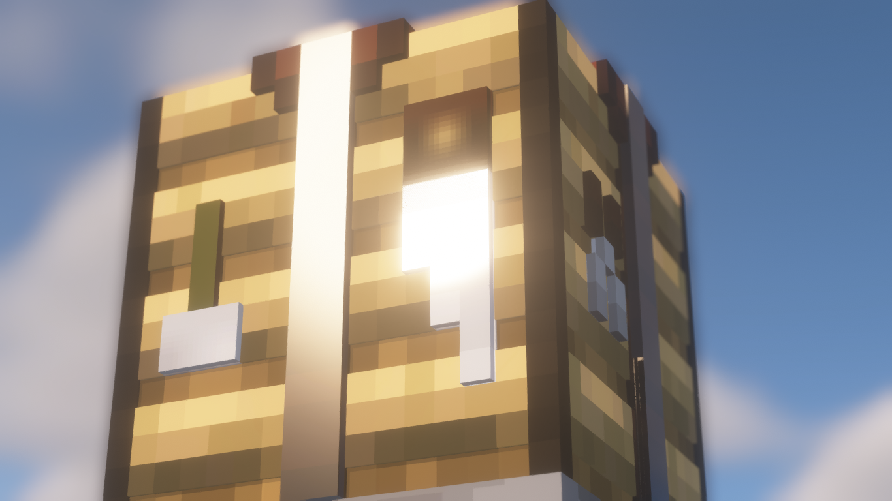
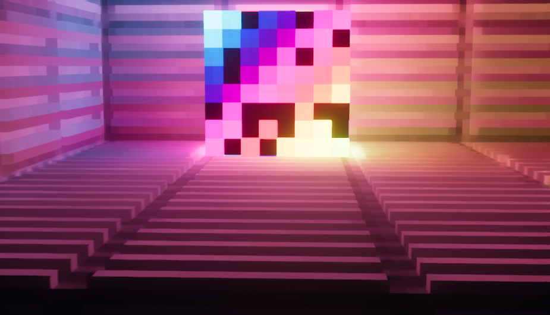
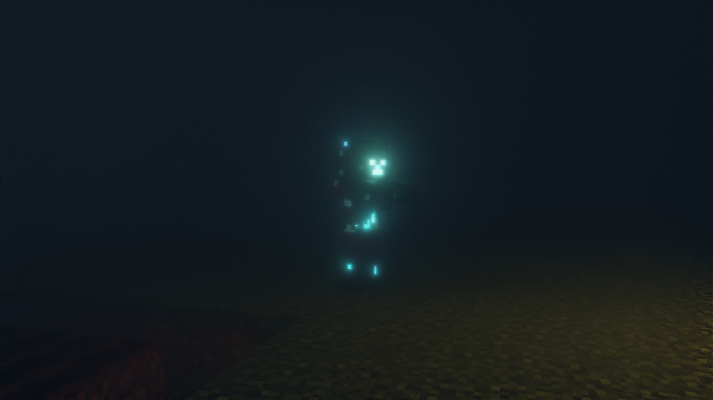

Info
Q.1)How do I install the BURRP pack?
Answer:-You have to first download the .zip file, then extract it, followed up with copy-pasting the version you want to %appdata%/.minecraft/resourcepacks (you can also use win+R (for windows only) and paste the location to go to that folder).
Then in-game, you need to go to Settings→Resource Packs, then you have to select the pack and click done.
Q.2)What are the minimum requirments for these packs to run it on my PC?
Answer:-Since BURRP is only a 128x pack, even a weak PC might be able to handle it (at least enough for taking screenshots)
On the other hand, since Vanilla Realism is only a 16x pack, even a Potato PC will be able to handle it.
Q.3)I cant see any difference even with shaders ON in-game with Vanilla Realism
Answer:-The most probable reason for this might the fact that you wouldnt have enabled Normal & Specular Mapping in the shader settings.
Since every shader has a different option for enabling them, you have to go through all the options to find them.
Downloads
BURRP
This is a 128x Semi-Realistic Resource Pack, which is still in-development.
The Early Access Packages of the pack can be downloaded here
Get BURRP Early Access Package
Note:-This .zip file contains both the Old-PBR and the Lab-PBR-1.3 versions of the resource pack, so make sure you unzip the main file and then copy-paste the one you want.
About Me

I basically started playing Minecraft in 2020, when me & my friends used to play a SMP, but then I got the link to the shaderLABS discord channel, and since joining it, I (having got much invalueable help from the support staff there) started creating Resource packs which would be mildly-performance consuming.
The first major Resource pack created by me was Vanilla Realism™, followed up with BURRP™ (Boz's Universally Realistic Resource Pack)

BURRP Glowing Ores

BURRP Farmland_moist

BURRP Packed Ice

BURRP Disco Block

BURRP Farmland_moist

BURRP Emissive Creepers

Vanilla Realism Leaves's SSS

Vanilla Realism Crafting Table

Vanilla Realism Brown Terracotta

Vanilla Realism Entity Support